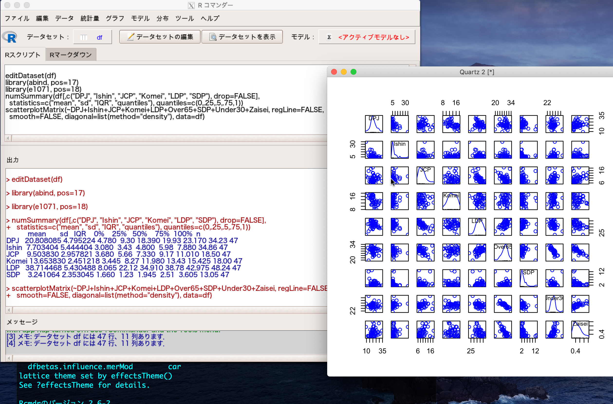
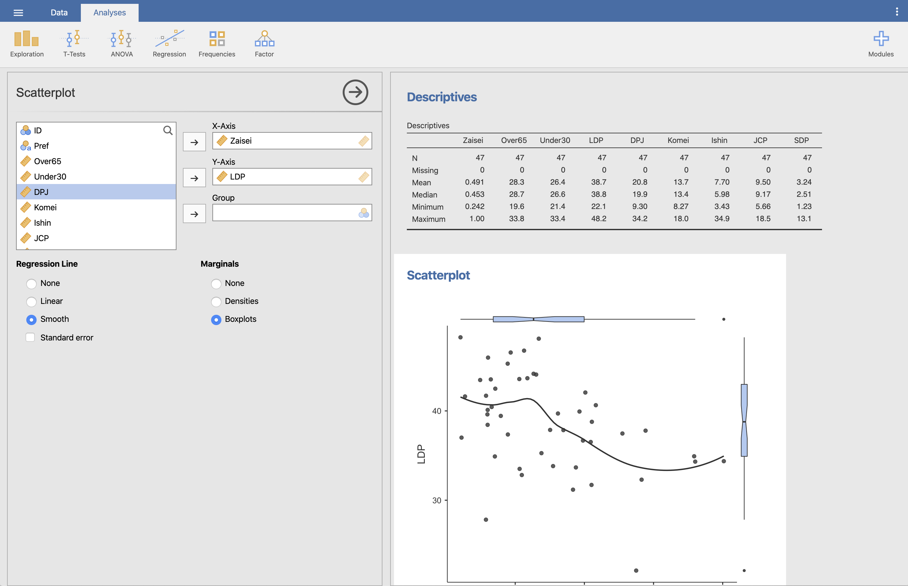

1 R?
1.1 Rとは

Rは統計、データ分析、作図のためのインタープリタープログラミング言語である。Rという名前は二人の開発者 Ross Ihaka と Robert Clifford Gentleman のイニシャルに由来する。R言語は完全にゼロベースから開発されたものではなく、1976年に開発されたS言語に起源をもつ。S言語もR言語同様、統計やデータ分析に特化した言語であり、S言語の開発が中止された現在、RはSの正当な後継者であると言ってよいだろう。
R以外にも、統計・データ分析のために利用可能なソフトウェアはたくさんある。社会科学におけるデータ分析の授業を履修したことがあるなら、SPSS や Stata という名前をきいたことがあるかもしれない。工学系ならMATLAB が有名かもしれない。企業ではSAS という高価なソフトもよく使われる1。
これらのソフト（アプリ）は基本的に有料だが、お金がないとデータ分析のソフトウェアが使えないわけではない。無料でありながら優れたソフトウェアも多く公開されている。以下にその一部を示す。
| ソフト・言語名 | 備考 |
|---|---|
| PSPP | SPSSにとてもよく似た無料ソフトウェア。 |
| JASP/jamovi | 裏で動いているのはR。詳細は本章の後半で |
| gretl | 時系列分析など、計量経済学で利用される手法に特化したソフト。 |
| GNU Octave | MATLAB とほぼ同じ文法をもつ無料言語 |
| HAD | 清水裕士 先生が開発しているExcelベースのデータ分析マクロ |
統計分析に特化したプログラミング言語としてRの競合相手になるのは Julia と Python だろう。Julia言語は一見Rによく似ているが、計算速度が Rより速いと言われている2。ただし、比較的新しい言語であるため、パッケージと解説書がRよりも少ないという難点がある。Pythonは現在のデータサイエンス界隈において、Rとともに最も広く使われている言語である3。Pythonは統計・データ分析に特化した言語ではないが、統計・データ分析のライブラリが非常に充実しており、機械学習（とくに、コンピュータービジョン）ではRよりも広く使われている。Python以外の言語、たとえば C や Java、Ruby、Fortranでも統計・データ分析は可能ある。実際、RやPythonのパッケージの一部はCやJavaで作成されている。ただし、RやPythonに比べると、データ分析の方法を解説したマニュアル・参考書があまりないのがつらいところだ。ひとつの言語だけでなく、複数の言語を使えるようになったほうが良いことは言うまでもない。本書はRについて解説するが、他の言語にもぜひ挑戦してほしい。
1.2 Why R?
私たちRユーザにとっての神のような存在であるHadley Wickham（通称：羽鳥先生）は Advanced R (2nd Ed.) で次のように仰せられた。
- It’s free, open source, and available on every major platform. As a result, if you do your analysis in R, anyone can easily replicate it, regardless of where they live or how much money they earn.
- Rは無料で、オープンソースで、多くのプラットフォーム（訳注: macOS, Linux, Windowsなど）で利用できます。よって、Rを使って分析すれば、どこに住んでいるか、いくらお金を稼いでいるかに関係なく、誰でも簡単にその分析を再現できることができます。
- R has a diverse and welcoming community, both online (e.g. the #rstats twitter community) and in person (like the many R meetups). Two particularly inspiring community groups are rweekly newsletter which makes it easy to keep up to date with R, and R-Ladies which has made a wonderfully welcoming community for women and other minority genders.
- オンライン (twitterの#rstatなど)、オフライン (訳注：日本では Tokyo.R が有名。筆者たちが開催している KUT.R もある) の両方で、多様なRコミュニティがあります。他にも最新のRをキャッチアップするためのニュースレターであるrweeklyや、女性や性的マイノリティーにやさしい R-Ladies も活発に活動しています。
- A massive set of packages for statistical modelling, machine learning, visualisation, and importing and manipulating data. Whatever model or graphic you’re trying to do, chances are that someone has already tried to do it and you can learn from their efforts.
- 統計モデリング、機械学習、可視化、データ読み込みおよびハンドリングのための膨大なパッケージが用意されています。どのようなモデルやグラフでも、既に誰かがその実装を試みた可能性が高く、先人らの努力に学ことができます。
- Powerful tools for communicating your results. R Markdown makes it easy to turn your results into HTML files, PDFs, Word documents, PowerPoint presentations, dashboards and more. Shiny allows you to make beautiful interactive apps without any knowledge of HTML or javascript.
- 分析結果を伝達する強力なツールを提供しています。R Makrdownは分析結果をHTML、PDF、Word、PowerPoint、Dashboard 形式に変換してくれます。HTMLや JavaScript の知識がなくても、Shinyを使って美しい対話型のアプリケーションを開発することができます。
- RStudio, the IDE, provides an integrated development environment, tailored to the needs of data science, interactive data analysis, and statistical programming.
- 代表的な統合開発環境であるRStudioはデータサイエンス、対話型のデータ分析、そして統計的プログラミングが必要とするものに最適化されています。
- Cutting edge tools. Researchers in statistics and machine learning will often publish an R package to accompany their articles. This means immediate access to the very latest statistical techniques and implementations.
- Rは最先端のツールです。多くの統計学や機械学習の研究者は自分の研究成果とRパッケージを同時に公開しています。これは最先端の方法を誰よりも早く実施可能にします。
- Deep-seated language support for data analysis. This includes features like missing values, data frames, and vectorisation.
- データ分析を根強くサポートする言語です。欠損値、データフレーム、ベクトル化などがその例です。
- A strong foundation of functional programming. The ideas of functional programming are well suited to the challenges of data science, and the R language is functional at heart, and provides many primitives needed for effective functional programming.
- Rはデータサイエンスに非常に有効である関数型プログラミングのための最適な環境を提供しています。
- RStudio, the company, which makes money by selling professional products to teams of R users, and turns around and invests much of that money back into the open source community (over 50% of software engineers at RStudio work on open source projects). I work for RStudio because I fundamentally believe in its mission.
- RStudio社は営利企業ですが、その収益の多くをオープンソースコミュニティーに投資しています。
- Powerful metaprogramming facilities. R’s metaprogramming capabilities allow you to write magically succinct and concise functions and provide an excellent environment for designing domain-specific languages like ggplot2, dplyr, data.table, and more.
- メタプログラミングが強力です。Rが持つメタプログラミング能力はあなたのコードを劇的に簡潔にするだけでなく、統計/データ分析に特化した
ggplot2、dplyr、data.tableなどの開発も可能にしました。
- The ease with which R can connect to high-performance programming languages like C, Fortran, and C++.
- RはC、C++、Fortranのようなハイパフォーマンス言語と容易に結合できるように設計されています。
しかし、他のプログラミング言語と同様、Rは完璧な言語ではありません。以下はR言語の短所の一部です。その多くはRそのものの問題というよりも、(プログラマーではなく)データ分析の研究者が中心となっているRユーザーから起因する問題です。
- Much of the R code you’ll see in the wild is written in haste to solve a pressing problem. As a result, code is not very elegant, fast, or easy to understand. Most users do not revise their code to address these shortcomings.
- あなたが普段見る多くのRコードは「今の」問題を解決するために迅速に書かれたものです。この場合、コードはあまりエレガントでも、速くも、読みやすくありません。ほとんどのユーザーはこの短所を克服するためのコード修正を行っておりません。
- Compared to other programming languages, the R community is more focussed on results than processes. Knowledge of software engineering best practices is patchy. For example, not enough R programmers use source code control or automated testing.
- 他のプログラミング言語に比べ、Rコミュニティーは過程よりも結果に注目する傾向があります。多くのユーザーにおいて、ソフトウェアエンジニアリングの知識を蓄えるための方法が不完全です。たとえば、(GitHubなどの) コード管理システムや自動化された検証を使用するRプログラマーは多くありません。
- Metaprogramming is a double-edged sword. Too many R functions use tricks to reduce the amount of typing at the cost of making code that is hard to understand and that can fail in unexpected ways.
- Rの長所でもあるメタプログラミングは諸刃の剣です。あまりにも多くのR関数はコーディングのコストを減らすようなトリックを使用しており、その代償としてコードの理解が難しく、予期せぬ失敗の可能性があります。
- Inconsistency is rife across contributed packages, and even within base R. You are confronted with over 25 years of evolution every time you use R, and this can make learning R tough because there are so many special cases to remember.
- 開発されたパッケージは、R内蔵のパッケージさえも一貫性が乏しいです。あなたはRを使う度にこの25年を超えるRの進化に直面することになります。また、Rには覚えておくべきの特殊なケースが多く、これはR学習の妨げとなっています。
- R is not a particularly fast programming language, and poorly written R code can be terribly slow. R is also a profligate user of memory.
- Rは格別に速い言語ではありません。下手に書かれたコードは驚くほど遅いです。また、Rはメモリの浪費が激しい言語と知られています。
1.3 GUIとCUI
現在、多くのソフトウェアはGUIを採用している。GUI とは Graphical User Interface の略で、ソフトウェア上の入力および出力にグラフィックを利用する。単純にいうと「マウスでポチポチするだけで操作できる環境」のことだ。一方、Rでは基本的にCUI (Character User Interface) を利用する4。これは全ての操作を文字列ベースで行う、つまりキーボードで行うことを意味する5。
身近な例として、あるラーメン屋での注文（呪文）システムを考えてみよう。無料トッピングを指定するときに「決まった言い方」で指定するのがCUI方式である。一文字でも間違うとオーダーは通りらない。たとえば、「野菜マッシマッシ!」とか「野菜MashMash!」と言ってしまうと、店長さんに「は？」と言われ、周りの客から白い目で見られる6。他方、食券の自動発売機でトッピングを指定できるのがGUI方式だ7。この場合、そもそも間違いは起きない。誰でも簡単に注文できるのがGUI式のメリットだが、自分で注文するものが決まっていて、注文の仕方を知っているなら CUI式のほうが早い。毎回同じ注文をするなら、注文内容を録音しておいて、次回はそれを再生することも可能である。GUI方式では、注文方法を再現するのは難しい。

CUIとGUIを比べたとき、一見するとGUIのほうが優れているように見える。マウスでポチポチするだけで操作できるほうが楽に見えるし、間違いの心配もなさそうな気がする。キーボードで長いコマンドを打つCUIよりも、ボタンをクリックしたほうが手早く済みそうにも思える8。そして、CUIのコマンドを覚えるのはしんどい9。
しかし、CUIにはCUIなりの長所がある。まず、コードが記録できる。マウスでポチポチした操作は、パソコンの画面全体を録画しない限り記録できない。よって、GUIでは自分の分析プロセスを記録することが難しい。他方、すべてコマンドで操作した場合、入力したコマンドを文字列として記録することは容易である。また、CUIはGUIよりも柔軟である。先ほどのラーメン屋の例で考えると、CUIでは「一応」野菜ちょいマシのような注文（呪文）のカスタマイズもできる10。しかし、GUI（券売機）だと注文の自由なカスタマイズはできない。店が用意したボタンしか押せない（ソフトがメニューに表示しているコマンドしか実行できない）。また、コマンドの入力の時間や暗記も、それほど難しくはない。後で説明するように、Rユーザにとっての超有能な秘書であるRStudio (IDEの1種) がコマンド入力を助けてくれる。スペルが間違っていたり、うろ覚えのコマンドなどがあっても、RStudio （あるいはその他のIDE）が瞬時に正解に導いてくれる。
本書はCUIとしてのRについて解説する。Rは統計ソフトでありながら、言語でもある。外国語の勉強に喩えるなら、CUIを使うのは単語や熟語を覚え、文法やよく使う表現を学習して自分で考えて話すことであるのに対し、GUIを使うのは AI に翻訳を頼み、外国語については自分で一切考えないことに似ている。たいして興味のない国になぜか旅行で訪れることになった場合にはGUI方式で済ますのも良いだろう。しかし、それでその言語を「勉強した」とか「理解した」などという人はいないはずだ。Rを「理解」したいなら、CUI以外の選択肢はない11。
それでもやはりGUIのほうがとっつきやすいという頑固なあなたのために代表的なRの GUI を紹介するので、以下のリストを確認したらこの本は閉じていただきたい。またいつかどこかでお会いしましょう。CUIを使う覚悟ができたあなたは、以下のリストを読みとばし、引き続き一緒にRの世界を楽しみましょう！


